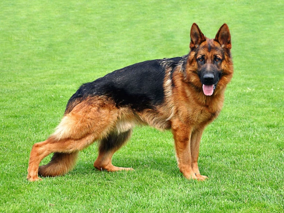

სურათი
ისტორია
გერმანული ნაგაზი შექმნეს გერმანიაში 19-ე საუკუნეში, როგორც სამუშაო ძაღლი ფერმაში და პოლიციის სამუშაოებში.
ზომა და გარეგნობა
ზომა: 60–65 სმ (მამლები), 55–60 სმ (მდედრები)
წონა: 30–40 კგ
ფერები: შავი-ტანიანი, მთლიანად შავი, სურა
ხასიათი
ჭკვიანი, ერთგული, ოჯახის მიმართ მგრძნობიარე, საჭიროებს აქტიურ ვარჯიშს.